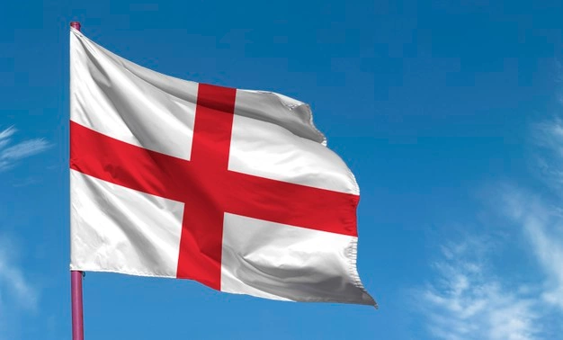
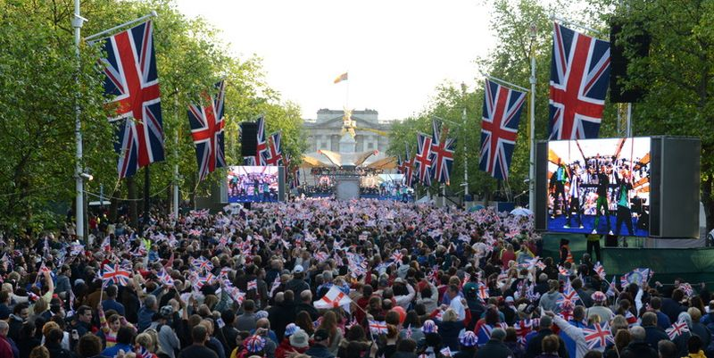
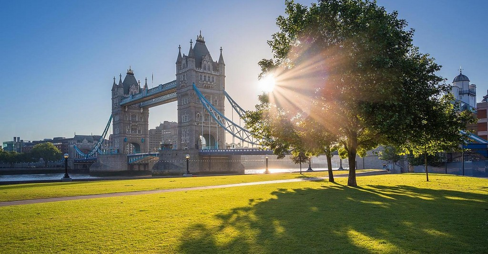
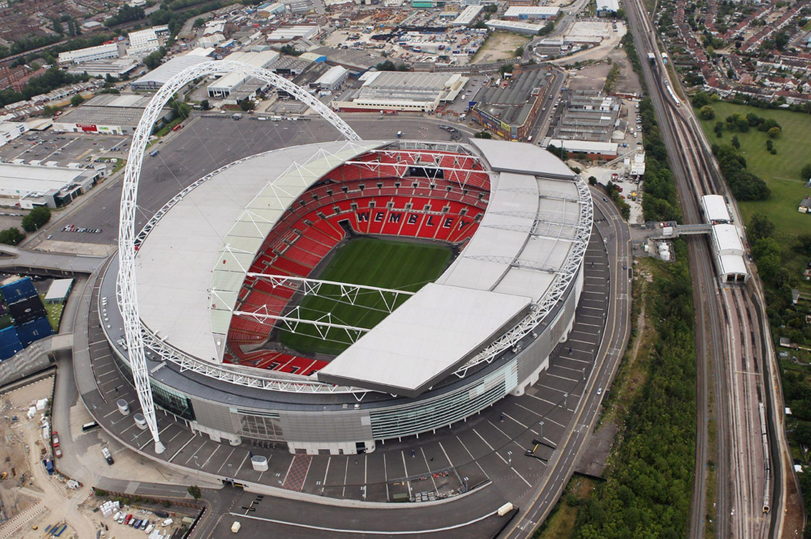
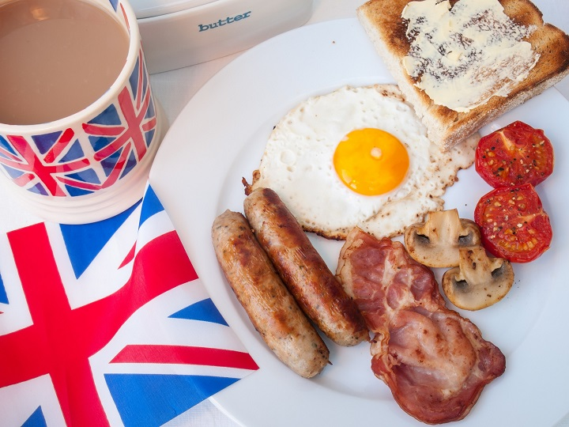
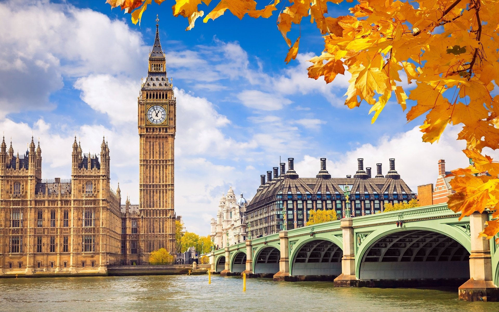

Англия
География
 Англия — страна, являющаяся крупнейшей административно-политической частью Соединённого Королевства Великобритании и Северной Ирландии. Население Англии составляет 84 % от общего числа населения Великобритании. Столица — Лондон, крупнейший город Соединённого Королевства.
Англия стала объединением семи некогда враждовавших королевств в 927 году и названа по имени древнегерманского племени англов, обосновавшегося на острове Великобритания в V—VI веках.
Англия — место происхождения английского языка и Англиканской церкви, а английское законодательство формирует основу юридических систем многих стран мира; кроме того, Лондон был центром Британской империи, а страна — местом возникновения Промышленной революции. Англия была первой промышленно развитой страной, а также страной с парламентской демократией, конституционные, правительственные и юридические новшества которой были переняты другими нациями и государствами.
Королевство Англия, включая княжество Уэльс, являлось отдельным государством до 1 мая 1707 года, когда объединилось с Королевством Шотландия в Королевство Великобритания.
Население
 Сегодня население крупнейшей административной и политической части страны составляет примерно 84-85% от всего населения Соединенного Королевства Великобритании и Северной Ирландии. Численность населения Англии в 2020 году составляла 56,668,100 человек. До 55 года до нашей эры земли современной Англии населяли кельты. Затем туда пришли римляне, но после их ухода на территориях закрепились англы, саксы и юты, которые были прямыми потомками кельтских племен. Лишь шотландцы никогда не относились к кельтской группе, они были потомками пиктов и гэлов. Таким образом, германские племена с древних времен являлись коренным этносом английских территорий. Такое положение вещей сохраняется и сегодня. В 19 веке в Англии произошел отток населения в другие страны. Люди уезжали в США и Европу. Людская численность плохо восполнялась иммигрантами. Сегодня же расклад ситуации изменился в противоположную сторону.
Этнический состав Англии Благодаря иммиграции в Англии теперь следующий национальный состав:Англичане; Ирландцы; Индийцы; Пакистанцы; Бенгальцы; Азиаты; Африканцы; Смешанные расы.
Шотландцы и ирландцы также считаются полноправными жителя Великобритании, но самая большая их численность находится на территории современной Ирландии и Шотландии. На территории Англии ирландцев и шотландцев проживает не так много, как может показаться на первый взгляд.
Климат

Англия – в этой части Великобритании климат неустойчивый, часто наблюдаются туманы, порывистый ветер. Средняя температура зимой +5С. Дует юго-западный ветер, что приносит штормы и дожди. Весна характеризуется холодными северными ветрами, но дожди выпадают редко. Летом температура варьируется от +16 до +32. В августе выпадает самое большое количество осадков. Осенью преобладают циклоны. Смешение теплого воздуха и холодной поверхности земли способствуют образованию туманов. Климат в Лондоне мягкий и умеренный на протяжении всего года. Летом тепло, но не жарко. В последние годы отмечается повышение температуры. Рекордная летняя жара стояла в 2003 году – температура составила +38С. А осень 2011 года поставила новые температурные рекорды – в конце сентября температура поднялась до +29С. Образование туманов наблюдается чаще всего в январе и феврале. В наши дни в Лондоне всего около 45 туманных дней, но большинство дней в году – облачные и пасмурные. Средняя температура летом около +19С. Зима прохладная, но не морозная – в среднем температура не опускается ниже 7С. Редко выпадают снегопады, снежный покров всего около 25 мм. А среднегодовое количество осадков меньше, чем в Риме или Сиднее – около 584 мм.
Спорт
 Спорт играет важную роль в английском обществе. Среди командных видов спорта в Англии популярны футбол, хоккей на траве, крикет, регби, регбилиг и нетбол. Основные индивидуальные виды спорта: бадминтон, легкая атлетика, теннис, бокс, гольф, велоспорт, автоспорт и скачки. Футбол — самый популярный вид спорта, за ним следуют крикет, теннис и регби. Ряд современных видов спорта были систематизированы в Англии в XIX веке, в том числе крикет, регби, регбилиг, футбол, хоккей на траве, сквош, теннис и бадминтон. Впервые бейсбол был описан в Англии XVIII века.
Англия имеет свою национальную команду во многих командных видов спорта, но в Олимпийских играх участвует сборная Великобритании. Соревнование между странами Англией, Шотландией, Уэльсом и Северной Ирландией традиционно было в центре спортивной жизни Великобритании, но в последние десятилетия оно стало терять интерес. В частности, больше не проводится Домашний чемпионат Великобритании по футболу. Клубные соревнования по большинству командных видов спорта также проводятся отдельно в Англии. Однако существуют различные аномалии, такие как участие трёх крупнейших валлийских футбольных клубов в системе английской лиги и одного английского клуба в шотландской футбольной лиге.
Экономика
Важную роль в английской экономике играют сельское хозяйство, промышленное производство, индустрия высоких технологий и спортивная индустрия. В 2010 году спорт обеспечил 1,9 % ВВП Англии, войдя в число 15 крупнейших отраслей английской экономики, опередив такие отрасли как услуги связи, юридические услуги, бухгалтерский учёт, издательское дело, реклама и коммунальные услуги. В 2010 году со спортом было связано более 400 000 рабочих мест, то есть около 2,3 % всей занятости в Англии. По оценкам специалистов польза для здоровья людей регулярно занимавшихся спортом принесла английской экономике £ 11,2 млрд. Проведение массовых спортивных соревнований, таких как марафоны, повышают узнаваемость мест их проведения и позволяют увеличить доходы от туризма при минимальных инвестициях в инфраструктуру. Строительство новых стадионов, таких как «Миллениум» в Кардиффе и «Этихад» в Манчестере, стимулировало рост цен на местных рынках недвижимости.
Английская Кухня
 Английская кухня довольно пресная: редкие соусы неостры, неспособны изменить вкус блюд, они призваны лишь немного оттенить его. Англичане едят много мяса: телятину, говядину, баранину, свинину, дичь, широко используют субпродукты и кровь. Мясо обычно запекают и жарят: делают из него стейки, ростбифы, бифштексы, а, если нужна закуска - кровяные колбасы, сосиски, паштеты. Любят англичане и жареную рыбу - форель, треску. На гарнир к мясу и рыбе обычно подают совершенно безвкусные запеченные овощи.
Типичная английская закуска - сэндвич - закрытый бутерброд, в который можно положить абсолютно все: мясо, рыбу, овощи. Жители Туманного Альбиона не представляют жизни без десертов. В завершении трапезы на стол могут подать печенье, булочки с начинками, кексы и бисквиты, пироги.
Биг Бен
Биг-Бен (англ. Big Ben) — популярное туристическое название часовой башни Вестминстерского дворца. Официальное название башни с 2012 года — Башня Елизаветы, или Елизаветинская башня (англ. Elizabeth Tower)[1][2].
Изначально «Биг-Бен» являлось названием самого большого из шести колоколов, однако часто это название расширительно относят и к часам, и к самой часовой башне в целом[3]. На момент отливки Биг-Бен был самым большим и тяжёлым колоколом Соединённого Королевства. Его вес при этом составлял 13,7 тонны. В 1881 году уступил первенство колоколу Большой Пол (17 тонн).
Башня Елизаветы — один из самых узнаваемых символов Великобритании, часто используемый в сувенирах, рекламе, кинофильмах. С 2017 года до середины 2022 года находятся на глобальной реконструкции[4]
